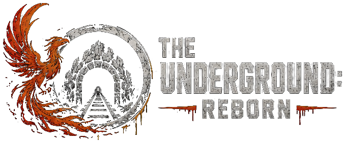

A DayZ server on Deer Isle. PvE across the island, PvP zones when you want a fight, and a story that unfolds the longer you survive.
STAG's hold on Deer Isle is slipping. Its experiments left the island full of things that shouldn't exist, and an underground network led by Calamity Jayne is fighting to undo the damage. You wake up on the shore with no memory. What you do next is up to you.
A main questline that starts at Groot Hill and branches out across the island's factions.
Every job you finish gets you noticed. Factions rank you up, and some only reveal themselves as the story unfolds.
AI patrols, guarded camps, hordes, hunts and loot crates appear across the map.
The south-east islands belong to them. The mainland is safer. Mostly.
Nine skills level up as you use them. Souls carry your progress through death.
Safe-zone traders, a Grey Market casino, and a Black Market for those who brave the PvP zones.
Free from dayzsalauncher.com. It downloads every mod the server needs for you.
Search The Underground in the launcher and hit Play.
Rules, wipe dates, events and help all live at discord.gg/tudayz.
The full rules are on Discord, and they're the ones that count.